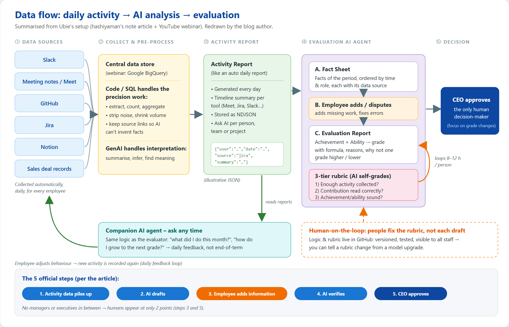
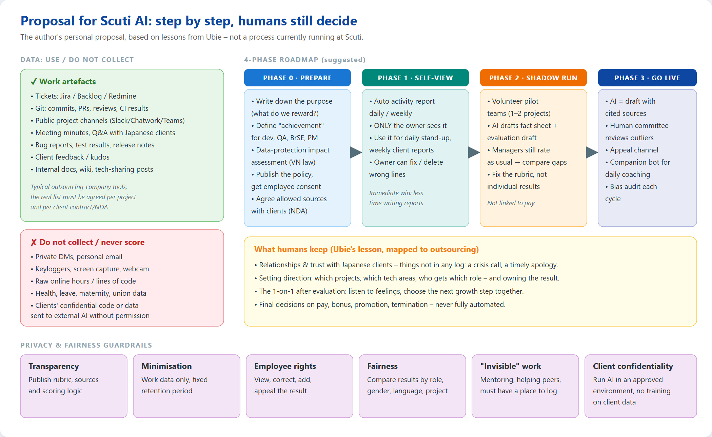

1. The two sources & Ubie's context
This post summarises two Japanese sources by the same author:
- The note article “評価をAIに委ねたとき、人の役割はどこに残るのか” (When evaluation is entrusted to AI, where does the human role remain?) by hashiyaman (Makito Hashiyama) — Engineering Manager, HRBP and generative-AI lead at Ubie, published 30 Sep 2026.
- The YouTube webinar “Ubieが実践するAI時代の人事評価” (about 1 h 4 min), hosted by Offers (overflow Inc.) with CEO Yuto Suzuki as moderator; streamed live on 17 Sep 2026 and uploaded to Ubie's official YouTube channel on 29 Sep 2026. The webinar includes a live screen demo of the system, which the article does not.
A few facts about Ubie first
- Japanese health-tech company founded in 2017 by a doctor and an engineer, about 200 employees (per the webinar).
- Organised as a holacracy: decision rights are tied to roles, not people; no middle managers, and one person often holds several roles.
- Ubie used to run goal setting and feedback but did not link them to pay. When it decided to link evaluation to compensation, it redesigned the system around generative AI. Preparation started in 2025; it has been in use since April 2026.
2. Why hand evaluation to AI? — 4 purposes
The article lists four purposes; the fourth underpins the other three:
| Purpose | Key idea (paraphrased) |
|---|---|
| 1. Let people focus on the work | Evaluation exists to grow the business, not as a goal in itself. Members digging through six months of memories to write self-reviews, and managers melting hours into calibration, is time Ubie wanted back. |
| 2. Remove bias from the process | Human evaluation relies on the evaluator's memory and tacit judgement, usually in closed 1-on-1s and small calibration rooms. AI can apply one yardstick to everyone, review all the facts and leave a trace of its reasoning. AI is biased too, but its bias is visible and therefore fixable. |
| 3. Match the AI-era way of working | Job boundaries are melting: PdMs code, engineers do market research, sales builds prototypes, one back-office person covers HR, admin and accounting with AI's help. A single evaluator cannot master every specialty; AI can read across many. |
| 4. Create a pull for recording everything | AI cannot read what was never recorded. Instead of ordering “write things down”, Ubie made “unrecorded work is not evaluated” the rule, so recording benefits the employee. They also automated collection and let people add information so those whose work is hard to log are not penalised. |
3. 3 design principles
3.1. Only the CEO makes the final decision
The official process has 5 steps, with no managers or executives in between:
Humans appear at only two points: the employee (adding facts, objecting) and the CEO (approving). The goal is to cut essay-writing and adjustment work and to remove politics such as impressing your manager or horse-trading between managers in calibration. Every step, including objections, is logged and used to improve the AI.
In the webinar Q&A the speaker explained that the CEO does not read everyone, but focuses on cases where the grade changed versus the previous term — aiming for 10% or less needing close review. He admitted this becomes a challenge at thousands of employees, but said they currently have no plan to let AI finalise grades with no human looking.
3.2. Measure achievement and ability separately, then combine
Achievement is quantified through a two-axis “achievement type” frame: vertically, the revenue side (created sales/profit, moved deals forward) vs the loss side (cut costs, prevented incidents/losses); horizontally, realised vs expected value. Those four plus productive capacity (building mechanisms that expand what the organisation can do) are organised into 7 types in total.
| Role | How achievement becomes a number (examples in the article) |
|---|---|
| Sales | Created revenue and profit |
| Product | Raised productive capacity, increased the likelihood of revenue |
| Operations / back office | Lowered costs, raised productivity |
| Security / branding | Prevented incidents or losses that would otherwise have happened |
In the Q&A the speaker added: quality improvements are converted into “future losses prevented”; platform work is converted into the difference in development speed and labour cost with vs without that platform.
Ability checks whether the achievement is repeatable: measured against the behavioural guideline “Ubieness” and the role-based skill map “U-map”. The two are combined into the overall grade.

3.3. Real-time feedback cycles
A human evaluator can at best give feedback weekly, usually quarterly or half-yearly. AI has no such limit: employees can get feedback whenever they want, even daily, adjust immediately, and the new behaviour gets recorded for the next round. The key: the evaluating AI and the companion AI share the same logic, so following daily feedback naturally aligns people with what the company rewards.
4. How daily activity data is collected and used
This is the core. The system has 3 components: the Activity Report, the Evaluation AI agent and the Companion AI agent (伴走AIエージェント — an AI that “runs alongside” you).

4.1. Step 1 — Collect: tool logs, every day, for everyone
- Sources: Slack, meeting minutes, GitHub, Jira, Notion, sales-deal records (per the article). The demo also shows Google Meet and Salesforce.
- Where it lands: per the webinar, data from these tools is aggregated in BigQuery (Google's data warehouse).
- Output: every day an Activity Report is generated automatically for each employee — the speaker likens it to an automatic “daily report” (日報): a summarised timeline per day, grouped by source (Meet, Jira, Slack…). Underneath it is NDJSON, so it is easy to process further.
- In the demo (webinar 27:10, fictional data): the Activity Report is filtered by person and time range, e.g. “last 1 month”. The author also has a separate note article on how the Activity Report was built.
- You can ask AI about these reports (“What has this engineer been doing lately?”) per person, team or project.
4.2. Step 2 — Pre-process: code for precision, GenAI for interpretation
A principle worth copying: never pour raw data into an LLM. Raw data is noisy and large. Extraction, counting and aggregation are done with SQL/code; data is trimmed so each AI call reads only what it needs, in a shape that makes fabrication hard; only inference, interpretation and summarisation go to generative AI.
4.3. Step 3 — Fact Sheet: a term's activity turned into facts
Guided by the rubric, the Evaluation AI agent condenses the term's Activity Reports into a Fact Sheet — the list of facts used for evaluation, ordered by time and role, each with its source. Employees can add missing work or correct mistakes.
The webinar's demo of a PdM's Fact Sheet (活動シート, around 28:35) shows exactly how the data is used:
- Where from: 293 activity records in the period — chat 108, minutes 40, summaries 30, calendar events without minutes 30, tickets 25, code 21, CRM 17, voice memos 10, roles 6, documents 6.
- How: the 293 records were merged into 3 “facts”; linking to roles uses the registered role and project lists; unregistered work is marked “unidentified”.
- Not included: private channels, the content of 1-on-1s, feedback from the employee to the person in charge, and past grades/evaluation results.
- What you can check: the AI lists gaps in the data (e.g. a project not registering you as owner, 30 meetings without minutes because forwarding isn't set up) so the employee can fix them and the next term is more accurate.
4.4. Step 4 — Evaluation Report: grade, formula and reasons
From the Fact Sheet and the employee's additions, the AI applies the rubric and produces an Evaluation Report: not only the grade but a traceable formula and reasoning, plus why it is not one grade higher and not one grade lower. In the demo (webinar 29:30) the draft lands on overall grade 4 (achievement 4, ability 3), with the range and “what would move the grade”.
4.5. Step 5 — Companion AI agent: feedback any time
Employees can ask open questions: “What did I do last month?”, “Where should I grow next?”. The agent reads the Activity Reports and answers against the evaluation criteria, ability standards and role. According to the speaker these conversations are also logged, so HR can analyse growth potential per person and company-wide to tune the system.
5. Making AI evaluate correctly: 3-tier rubric & human-on-the-loop
5.1. A rubric in 3 ordered tiers

| Tier | Question | Example |
|---|---|---|
| 1. Collection | Have we collected enough activity? | Sales needs deal data; engineers need code history; operations needs tickets and communication logs. |
| 2. Interpretation | Is the activity understood correctly? | In a multi-person meeting, whose remark started the decision? Talking the most is not contributing the most. |
| 3. Judgement | Are achievement and ability assessed soundly? | Is the AI guessing, or estimating achievement by the defined logic? |
Order matters: a later tier is not processed until the earlier one passes. Ubie originally had no rubric and could not tell whether a wrong result came from collection, interpretation or logic — tiers make failures locatable.
5.2. Human-on-the-loop: AI grades itself, people fix the rubric

- AI drafts → grades itself against the rubric → sends it back if below standard. This loop runs 8–12 hours per person on average.
- Humans don't review each draft; when a result is off, they treat it as a rubric bug and fix the rubric. People stand on the loop, not in it — so they don't become the bottleneck.
- Don't make AI imitate human scores. Using past human grades as the answer key would import human bias. Ubie teaches the AI the criteria: what humans value and what they ignore.
- Run it like software: a 3-person team (all with engineering or data-analysis backgrounds) keeps all logic in GitHub — visible to every employee, editable in parallel, tested per step, versioned so they can tell whether accuracy moved because of a rubric change or a new model.
5.3. Rolling it out so it isn't “imposed by the company”
The article mentions three measures, but the list itself did not appear in the text I could extract; the webinar (around 38:50–40:30) spells them out:
- A trial period where humans still calibrated and corrected results (as answer data), with those corrections made public, giving everyone time to get used to it.
- No hidden logic: all rubrics are public internally; anyone unsure why they got a grade can have AI explain the logic and send feedback if they find a flaw.
- Involve the whole company: some trial teams agreed to publish their evaluation results so everyone could openly debate “does this make sense?” — evaluation as a product built together.
6. What they learned & what remains for humans
Make the purpose explicit, down to philosophy
Ubie wrote three ordered statements: (1) give more reward to people with big achievements; (2) measure achievement quantitatively, including expected value; (3) assess ability, because repeatable results need it. (3) covers what pure achievement metrics miss: indirect work, mid/long-term work, platform building, incident prevention. Stop at “reward people who deliver” and AI can't know what “deliver” means — humans end up deciding every case.
Define the human part first
Ubie's answer to “if AI evaluates, what do humans do?” is two things: connecting with people (building trust, getting first-hand information AI can't) and putting intent into work (planting a flag and owning it until it is done). Only with that answer could they split work between AI and humans. They also redefined roles into 5 types instead of job titles.
Data built for evaluation pays off beyond evaluation
Executives see the state of the business without asking around; managers understand their members (one comment: “status-update time disappeared, so meetings focus on substance”); new joiners and people switching projects find information on their own. The author calls this “pull to record” the biggest learning.
What remains for managers?
The author's hypothesis: what remains is facing people's emotions — sitting with someone who has just received an AI evaluation and deciding their next growth step together. Conversely, gathering information for evaluations and writing them from personal experience will fade, and managers confined to one narrow specialty will lose relative value.
Candid points from the Q&A
- Accuracy isn't perfect: by the speaker's gut feeling, about 30% of cases come out right with AI alone; roughly another 30% only need a human to add guidance; for the rest, even how to guide is unclear — often senior people whose work has no precedent.
- Hardest parts: splitting contribution when 3–4 people achieve something together (the person who framed the problem vs those who executed), and mid/long-term work (who built the platform vs who uses it to earn).
- Feeling watched: the answer leaned on an existing culture of transparency, and on shifting the feeling from “being monitored” to “being seen” — paired with early support when workload rises or performance drops; avoid a company-vs-individual stance.
- Multiple roles: at the start of a term, the employee and leadership agree on an “expected role” (not a hard target); results outside the expectation still count.
- Surprise finding: human evaluators themselves split clearly between those who weight achievement and those who weight ability/potential.
7. My personal takeaways
- AI evaluation is a data problem, not a prompt problem. Most of Ubie's effort sits in the Activity Report: collecting, filtering, sourcing, SQL before LLM. That's engineering work — and why a 3-person team could build it.
- A rubric is a unit test for the evaluation pipeline. Three tiers (collection – interpretation – judgement) mirror how we debug pipelines: input, transformation or logic. I can reuse this for other agents, not just HR.
- Transparency is a prerequisite, not a feature. Everything that convinces employees (sourced facts, editable data, logic in GitHub, “why not one grade up/down”) is transparency. Without it, AI evaluation is just a new black box replacing an old one.
- Say clearly what humans still do. Otherwise staff and managers resist out of fear, not because the system is bad.
- Don't copy bias. Using old human scores as ground truth is the fastest way to automate unfairness. Teach criteria, not imitation.
- It isn't perfect, and they say so. Numbers like “about 30% right on its own” remind me to start AI as an assistant (sourced drafts) before ever considering it a decision-maker.
8. Applying it at Scuti AI: HR process, daily operations, privacy & fairness
Scuti AI is a Vietnamese AI/software outsourcing company. Most of our work already leaves digital traces: tickets, commits, pull requests, reviews, test results, project chat, client meeting minutes. In other words, the raw material for an Activity Report mostly exists already. The big difference from Ubie: much of that data lives in clients' projects, so security and contracts come first. What follows is my personal proposal, not a process Scuti currently runs.

8.1. Mapping Ubie's techniques onto Scuti's HR process
| Ubie technique | Applied at Scuti |
|---|---|
| Daily Activity Report | Auto-summarise Jira/Backlog/Redmine, Git and project channels into draft daily stand-ups and weekly client reports. Useful even before touching evaluation: less report-writing, PMs/BrSEs see status faster. |
| Sourced Fact Sheet the employee can edit | Replace “write your own achievements” in periodic reviews: AI drafts the list with ticket/PR links, employees add “invisible” work (mentoring, helping other projects, night incident handling, interviewing candidates, tech-sharing posts). |
| Achievement frame (revenue/loss, realised/expected, productive capacity) | Define achievement per outsourcing role: Dev — features delivered on time, fewer bugs reaching the client; QA — defects caught before release (losses prevented); BrSE/PM — client retention, contract expansion, fewer surprise change requests; platform people — templates, CI/CD, internal libraries that speed up other projects. |
| Ability via behaviour guideline + skill map | Tie to existing competency/career-path frameworks (if any); add outsourcing-specific skills: client communication, Japanese/English, effort estimation, using AI at work. |
| Companion agent | An internal bot where staff ask “what did I contribute this quarter, what should I improve to level up?” before a 1-on-1 — so the 1-on-1 is a real conversation, not “so what have you been doing?”. |
| 3-tier rubric + human-on-the-loop | HR plus a small engineering group manage the rubric as code (Git, review, tests); when results drift, fix the rubric rather than hand-editing individuals. |
| Data value beyond evaluation | Onboarding people into projects, resource allocation (who is overloaded), early warning on risky projects. |
8.2. Privacy & fairness: non-negotiable conditions
- Legal: activity data tied to a name is personal data. Work with legal under Vietnam's Decree 13/2023/ND-CP on personal data protection and the 2025 Law on Personal Data Protection (effective 1 Jan 2026): state the purpose, obtain consent, limit retention, assess impact before processing.
- Client confidentiality: client code and documents are under NDA. Use metadata (ticket, status, link) or run models in an approved environment; never send client data to external AI services without permission; never let a vendor train on it.
- Minimisation: work data only. No reading DMs, no keyloggers, no screenshots, no webcams. Copy Ubie's own “not included” list from the demo (private channels, 1-on-1 content, past grades).
- No raw vanity metrics: lines of code, commit counts and online hours are easy to game and unfair to people doing hard, low-output work.
- Fairness: each cycle, compare result distributions by role, project, gender and working language; people on projects with few digital tools (e.g. clients requiring work inside their own systems) must not be penalised for “missing logs”.
- Employee rights: see all data about yourself, correct it, add to it, appeal; every decision on pay, bonus, promotion or termination has an accountable human.
8.3. Quick guide: pilot it in one project
Write the purpose in 3 sentences (like Ubie): why evaluate, how to measure achievement, why ability matters. Share it with the pilot team.
Pick one volunteer project with members' consent and, where project data is involved, the client's. Fix the source list: tickets + Git + public project channels.
Export with scripts (Jira/Backlog, GitHub/GitLab APIs) to NDJSON per person per day; filter with code first, give only summaries to the LLM.
Generate a weekly Activity Report visible only to its owner, used to write the weekly report. Collect feedback: what's missing, what's wrong.
At quarter end, shadow-run: AI drafts a Fact Sheet + evaluation; managers evaluate as usual; compare gaps to fix the rubric. No link to pay yet.
Example prompt for the Activity Report step (after code has filtered the data):
9. Demo video & how this blog was made
The whole source-reading process was recorded in one continuous video: open the note article → scroll key sections → open the YouTube video, description, transcript panel, jump to the demo parts → open both diagrams → end on the finished (Vietnamese) blog scrolled top to bottom.
The original webinar:
10. Conclusion & references
The lesson from Ubie isn't “AI scores employees”; it's how they turn daily activity into sourced facts, so AI does the collecting, summarising and reasoning while humans focus on setting criteria, fixing the rubric and talking with people. For Scuti AI, a sensible first step is an Activity Report that serves the employee (less report-writing), then a Fact Sheet for review cycles — always keeping the final decision with humans, and treating privacy and client confidentiality as preconditions.